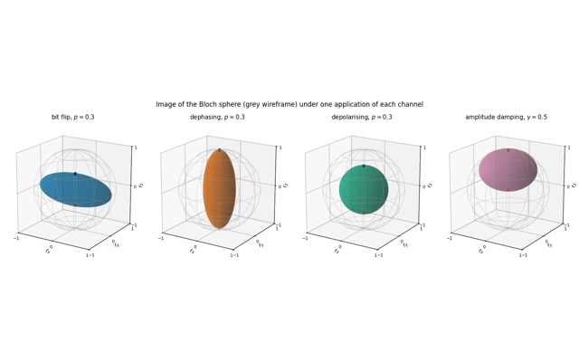

3 · The matrix-free engine

This chapter builds the simulator used by the rest of the course. A state of \(N\) spins is stored as a rank-\(N\) tensor with one index of dimension two per spin, and an operator on one or two spins acts on it through a single einsum contraction, so the \(2^N\times 2^N\) matrix is never formed. The same idea gives the Hamiltonian applied to a state, and with it the first matrix-free time evolution of a chain of twenty spins.
The following notebooks add what is needed to extract physics from such a state: expectation values, correlators and Pauli strings; reduced density matrices, entanglement entropies and a first phase diagram (the XXZ chain in a transverse field); density tensors with unitary and Kraus evolution for mixed states; and projective measurements with sampled bit strings and shot noise. Read them in the listed order. The last notebook, “Building the quantum simulator engine”, is the reference for every engine function: its Sections 2–12 accompany this chapter, Sections 13–18 summarise later chapters, and the function table of its Section 19.2 serves as an index.
Prerequisites are notebooks 01 (JAX) and 02 (einsum) of Chapter 1 and the dense Kronecker-product construction of Chapter 2. The engine built here runs the circuits of Chapter 4 and all later chapters.
Notebooks in this chapter
Matrix-free operators — acting on a many-body state with einsum
The core lecture: one- and two-site operators act on a rank-N state tensor through einsum, the \(2^N\times2^N\) matrix is never built; from hand-written index strings to apply_gate, matrix-free \(H\vert\psi\rangle\) and the first matrix-free time evolution of 20 spins.
States, observables and entanglement
A zoo of many-body states as tensors, reduced density matrices by einsum, correlators and Pauli strings, Schmidt decomposition, entanglement entropies, the Page value, area law versus volume law, and a first phase diagram of the XXZ chain in a transverse field.
Density matrices and quantum channels
Mixed states from ensembles and from entanglement, the rank-2N density tensor, unitaries and Kraus channels as single einsums, the noise-channel zoo on the Bloch sphere, GHZ states under local noise, and the stochastic unravelling of channels into pure-state trajectories.
Measurements — Born rule, collapse, sampling and shot noise
Projective measurements of single spins in any Pauli basis, jit/vmap-compatible stochastic code with explicit PRNG keys, sampling bit strings, shot-noise statistics with error bars, reset and mid-circuit measurements.
Building the quantum simulator engine — every ingredient of the simulator with its mathematics
A guided tour of the course engine quantum_engine.py, one building block at a time: the equation each function implements, the einsum string that realises it, a minimal example, and an independent dense-linear-algebra check built so that it fails for the typical bug.